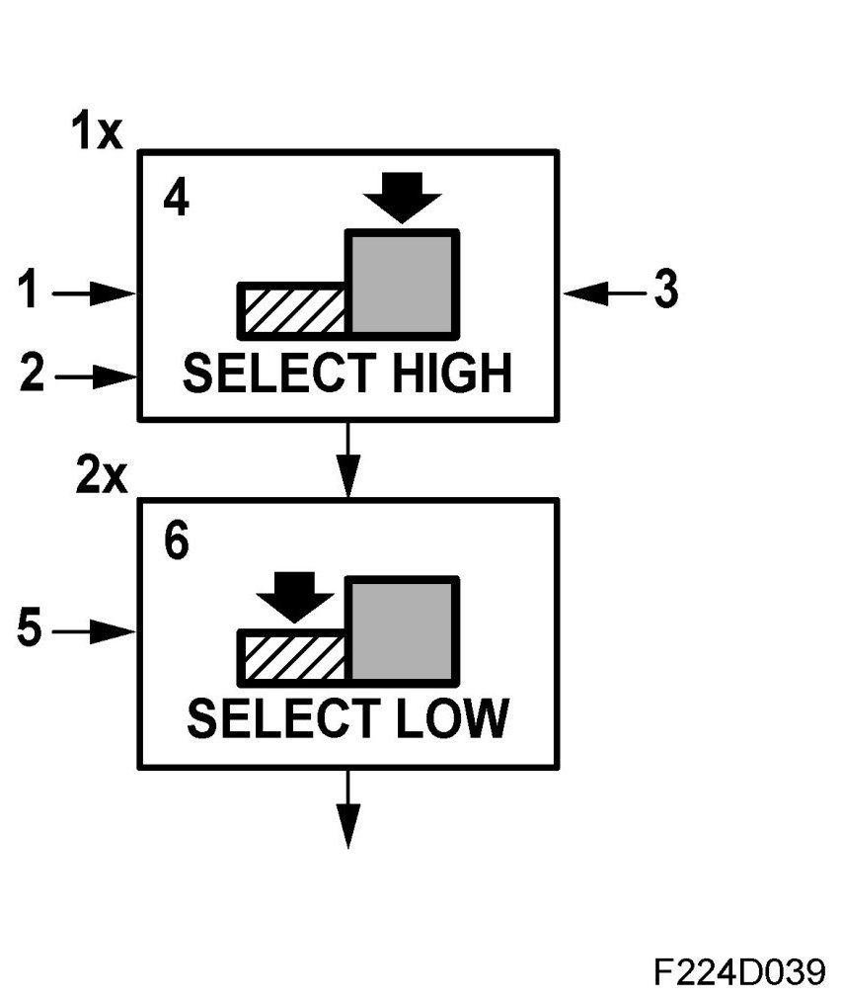
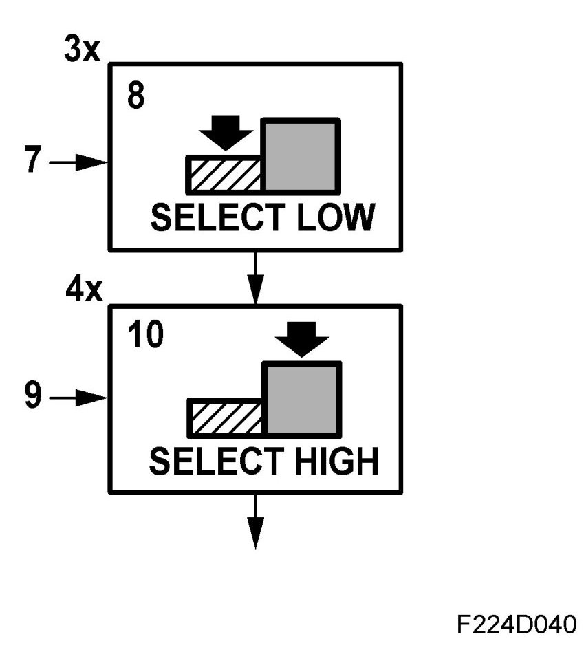
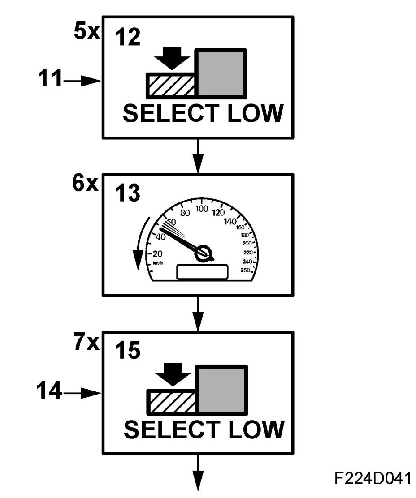
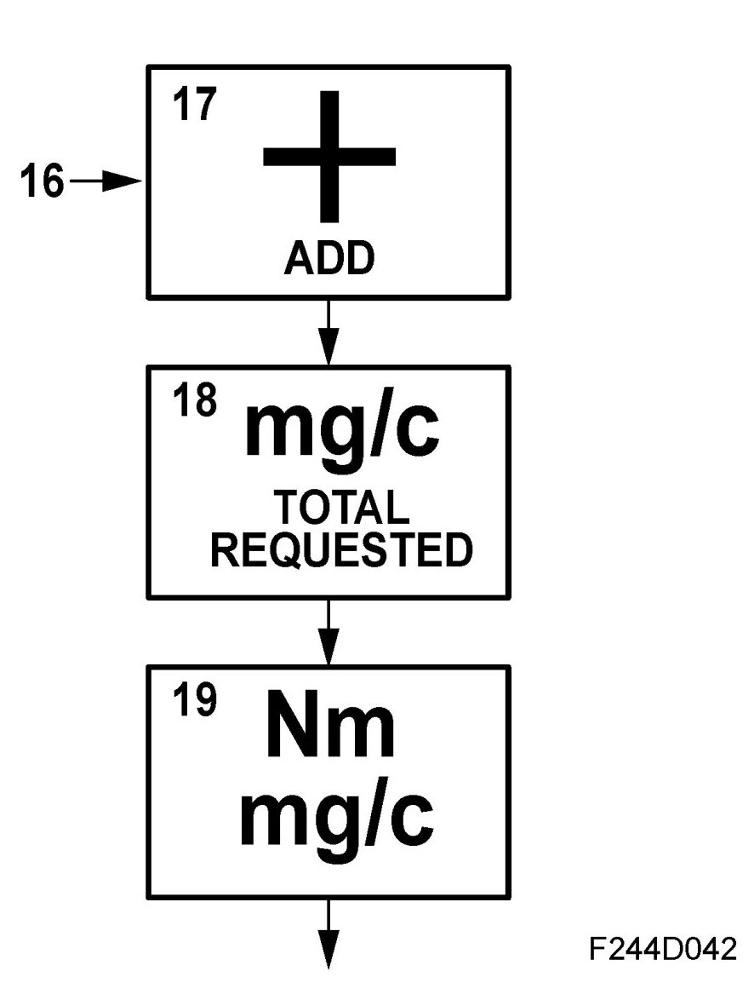
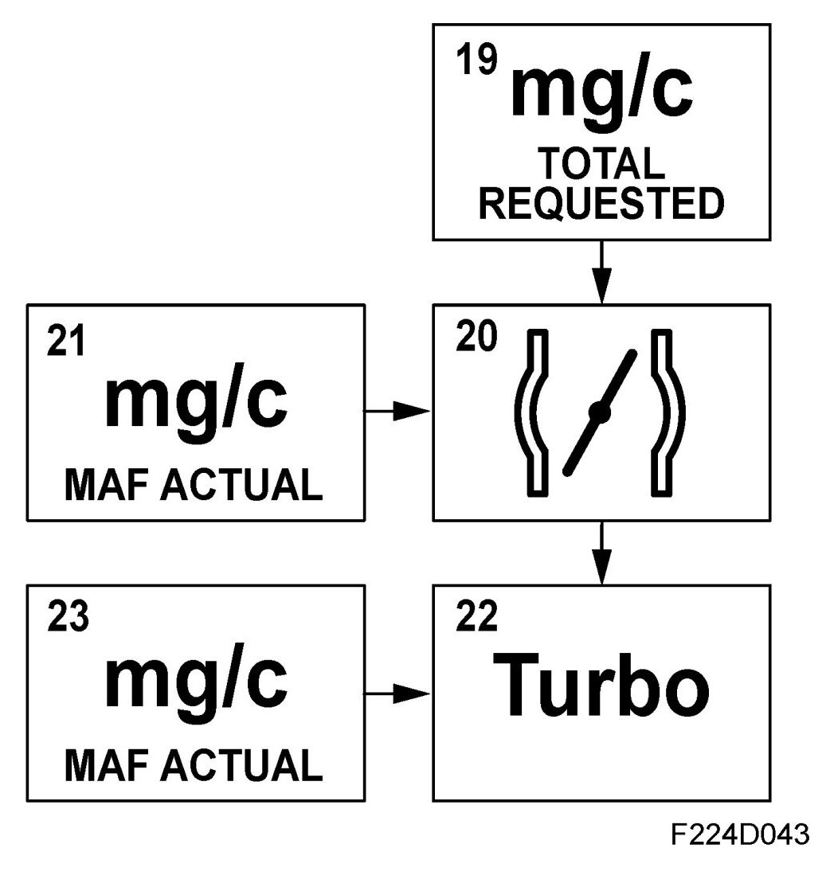

Torque Control, Basic Function
Torque Control, Basic Function
1. Driver request, 10

The control module reads the voltage from pedal potentiometer 1 and converts it to a torque request.
2. Cruise control, 11
With cruise control active, the torque required to maintain the set speed is calculated.
3. Idle, 12
4. Select highest value
1x requests torque to keep the engine running. The highest value (select high) of functions 10 (pedal) and 11 (cruise control) is selected. Function 12 (idle) gives torque to keep the engine running when the pedal is released and cruise control (11) is inactive.
5. Engine torque limitation
2x are torque limitations of what is requested from the box above. Here, the lowest value (select low) of 1x and 2x is selected. Maximum torque varies depending on the engine variant. Furthermore, engine torque when driving must be limited to protect the engine, gearbox, brakes and turbocharger. Even external units such as TCM or TCS/ESP can limit engine torque. Engine torque is also limited by certain system faults.
6. Select low
Control module selects lowest value.
7. Limitation of vehicle speed

Engine torque can be limited to limit the maximum speed (31) of the car.
8. Select low
Control module selects lowest value from function 2x and limitation of vehicle speed, 31.
9. Torque increase 4x
If requested torque is lower than is necessary to maintain stable combustion, if the wheels slip during engine braking or if dashpot is required, the engine torque can be increased slightly. Request is sent to box 11.
10. Select highest value
Control module selects highest value.
11. Torque reduction, engine protection

Engine torque can be reduced to protect the engine from e.g. knocking.
12. Select low
Control module selects lowest value.
13. Limitation of torque increase
This function dampens rapid changes in torque request to reduce transient enrichment.
14. Safety limitation
7x is a Select Low together with maximum permitted air mass/combustion when pedal released. Only for safety and as a final check. This result is the total air mass that is to pass the engine per combustion.
15. Select low
Control module selects lowest value.
16. Compensation

Compensation for the torque required for e.g. A/C compressor and generator operation.
17. Total compensation
The control module totals all the values.
18. Total requested torque
This value is the system's total torque request.
19. Conversion Nm to mg/c
Conversion torque (Nm) to air mass/combustion (mg/c).
20. Throttle control

Requested air mass per combustion is converted to a voltage for throttle potentiometer 1. Charge air pressure and temperature are used to correct the conversion. The throttle motor turns the throttle until the value for throttle potentiometer 1 agrees with the requested value.
21. Current air mass/combustion
Requested air mass/combustion is compared with the current air mass/combustion (MAF actual). In case of a deviation, the requested voltage for throttle position sensor 1 will be adjusted.
22. Turbo control
If the requested air mass/combustion is too great to be handled by throttle control only, control will be transferred to the turbo control. The excess is converted to a PWM that controls the charge air control valve. The value is corrected by the value from the atmospheric pressure sensor.
23. Current air mass/combustion
The requested air mass/combustion is compared with the current air mass/combustion and the charge air control valve PWM is adjusted if necessary.